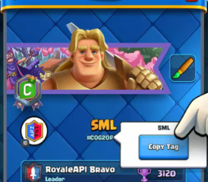
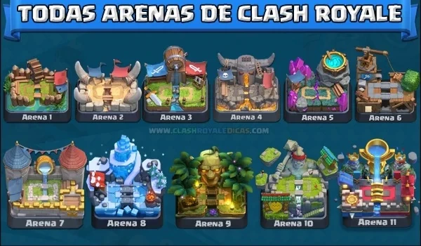

Control de Versiones con Git
Git es un sistema de control de versiones distribuido, ampliamente utilizado en el desarrollo de software moderno. Fue creado para gestionar proyectos de forma rápida, eficiente y colaborativa.
Comandos más populares de Git
git init- Inicializa un nuevo repositorio Git en el directorio actual. Este comando crea un repositorio vacío.git clone [url]- Clona un repositorio remoto en tu máquina local. Ejemplo:git clone https://github.com/usuario/repositorio.git.git status- Muestra el estado del repositorio: archivos modificados, nuevos archivos no rastreados, cambios preparados para el commit, etc.git add [archivo]- Agrega un archivo o cambios específicos al área de preparación (staging area) para el commit.git commit -m "[mensaje]"- Crea un commit con los archivos añadidos al área de preparación, agregando un mensaje descriptivo.git push- Sube los cambios locales al repositorio remoto. Generalmente se usa después de un commit para actualizar el repositorio remoto.git pull- Obtiene y combina los cambios del repositorio remoto al local. Equivalente agit fetchseguido degit merge.git checkout [rama]- Cambia a una rama específica del repositorio. Si la rama no existe, se puede crear congit checkout -b [rama].


Comparación con otros sistemas
| Sistema | Tipo | Popularidad |
|---|---|---|
| Git | Distribuido | Muy alta |
| SVN | Centralizado | Media |
| Mercurial | Distribuido | Baja |
| Perforce | Centralizado | Especializado (AAA, empresas) |
¿Ya usaste Git?
Completá el siguiente formulario para compartir tu experiencia: